02-8. 樱花的坦克抛壳动画
一、Blender内准备
1.我们需要在Blender中设置好退壳装置的旋转位置(如果没有退壳装置，忽略这一步)。以AGS为例，们需要设置物体原点到旋转中心，如图所示：
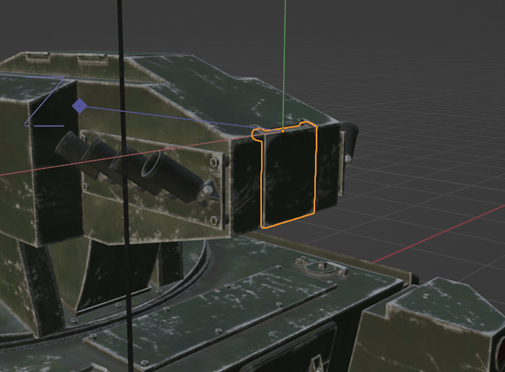
2.我们将弹壳放入炮塔内，设置为炮管或者炮塔的子级：
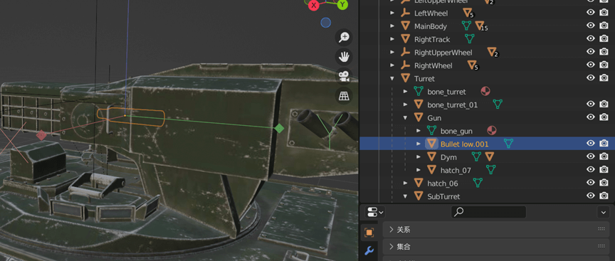
注：如果退壳装置旋转轴不是x,y,z轴，以T72A为例，可以设置一个空物体，旋转到和抛壳装置同一个角度，并将退壳装置设置为空物体的子级，这样在unity里我们只需旋转空物体即可，如下图所示：
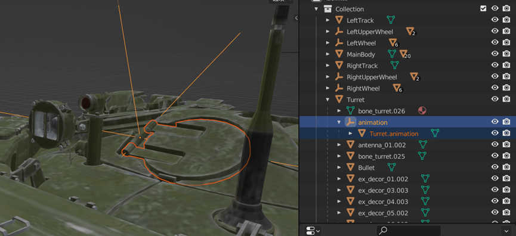
二、unity内制作
1.首先打开unity的animation组件
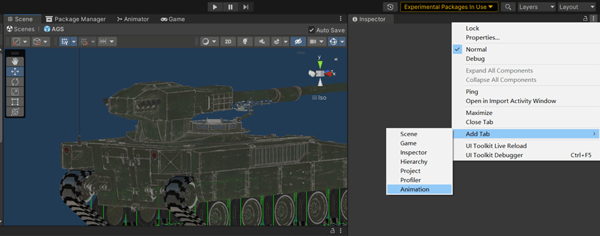
2.选定需要制作动画的模型后，点击create创建动画
 3.设置你的动画文件名称后，点击保存
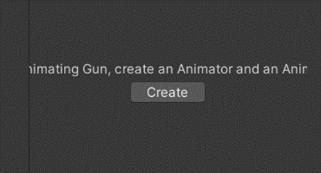
4.点击Add Property，可以在Transform中创建位置，旋转，大小三种变换，我们这里选择位置Position，如果需要动画过程中旋转，也可以添加Rotation。
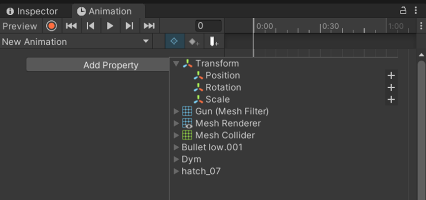
5.动画的制作可以参考如下链接中的视频：
https://www.bilibili.com/video/BV17t4y1F7CZ/?spm_id_from=333.788&vd_source=5f5f291242e9ace2af6f7105ccc768bf
在动画制作过程中，我们可以点击下方的curves，调整动画曲线
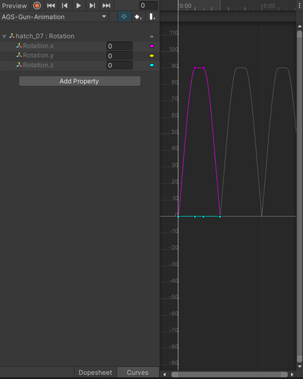
注：对于旋转轴不是x,y,z的模型，我们需要将坐标系调整到局部坐标下来制作动画，如下图所示：
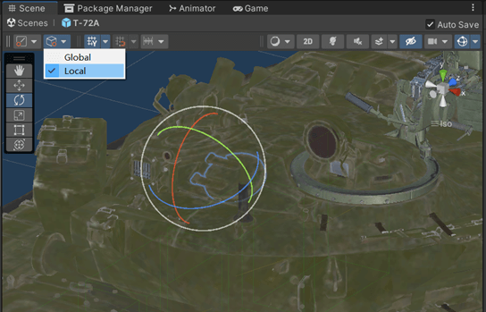
同时需要调整旋转为四元数旋转模式(需要在没有制作动画之前设置，否则动画过程不会生效，需要重新制作：
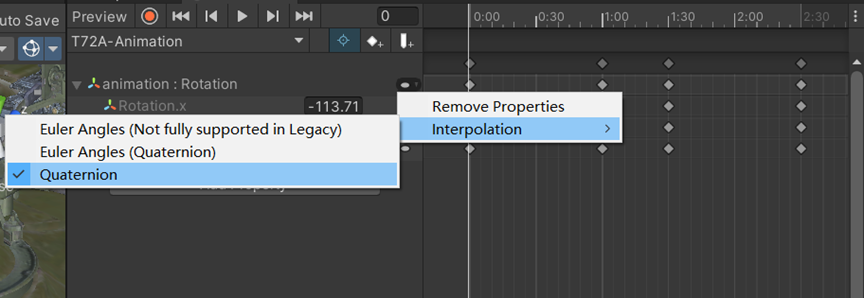
3.设置你的动画文件名称后，点击保存
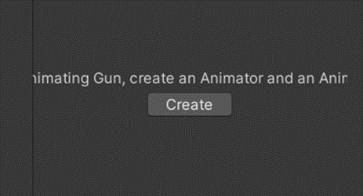
4.点击Add Property，可以在Transform中创建位置，旋转，大小三种变换，我们这里选择位置Position，如果需要动画过程中旋转，也可以添加Rotation。
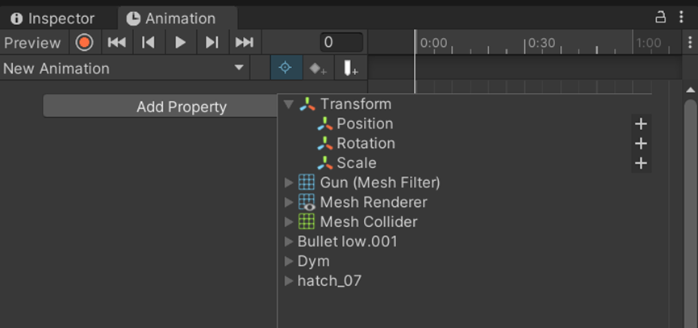
5.动画的制作可以参考如下链接中的视频：
https://www.bilibili.com/video/BV17t4y1F7CZ/?spm_id_from=333.788&vd_source=5f5f291242e9ace2af6f7105ccc768bf
在动画制作过程中，我们可以点击下方的curves，调整动画曲线
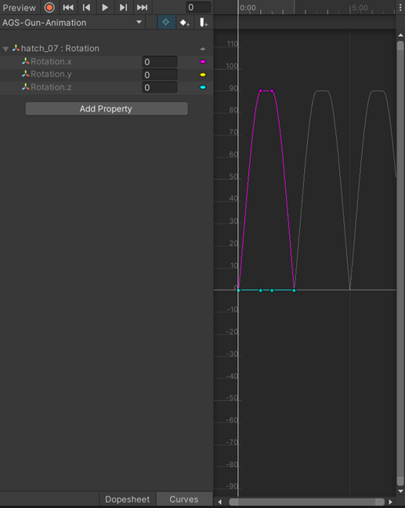
注：对于旋转轴不是x,y,z的模型，我们需要将坐标系调整到局部坐标下来制作动画，如下图所示：
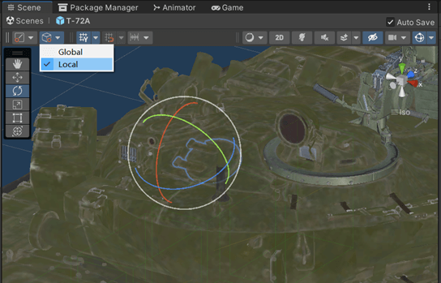
同时需要调整旋转为四元数旋转模式(需要在没有制作动画之前设置，否则动画过程不会生效，需要重新制作：
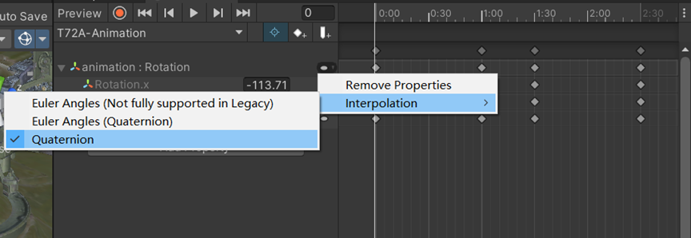
三、组件设置
-
增加Animation组件，如下设置：
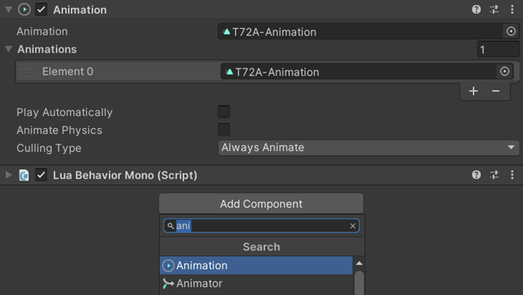 2. 点击制作的动画，进入debug模式，勾选Legacy后，返回Normal模式： 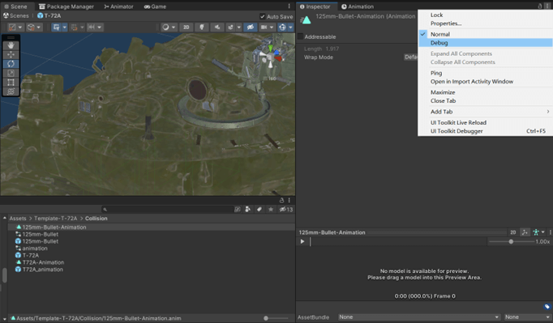 保证wrap mode模式为default 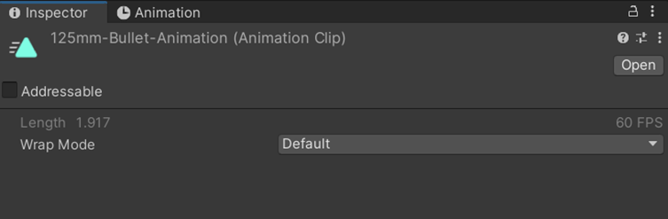 3.挂载Lua脚本组件： 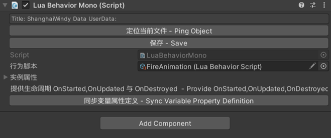 lua代码如下：
local PlayAnimationComponent = class("PlayAnimationComponent")
Behavior()
Property = {
}
function PlayAnimationComponent:OnStarted()
local animation = self.script:GetNativeComponent("Animation")
local ret, vehicle = self.script:TryGetTankInitSystem()
if ret then
VehicleAPI.RegisterVehicleLoadedEvent(vehicle, function()
VehicleAPI.RegisterBulletFiredEvent(vehicle, 0, function()
local isPlayed = animation:Play()
end)
end)
end
end
return PlayAnimationComponent
至此动画制作完成。